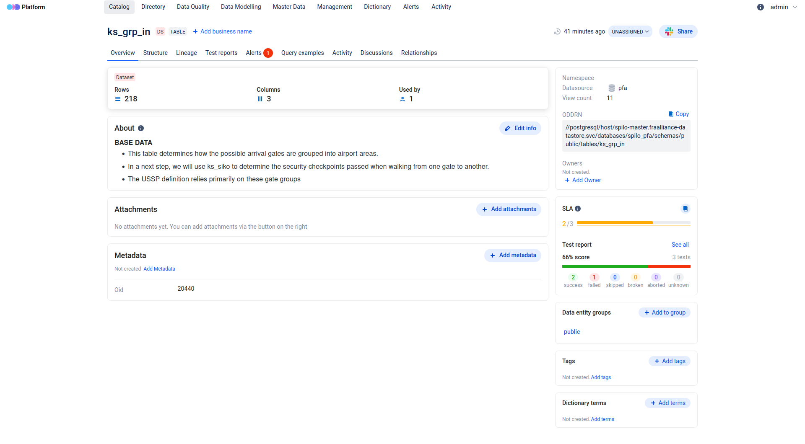
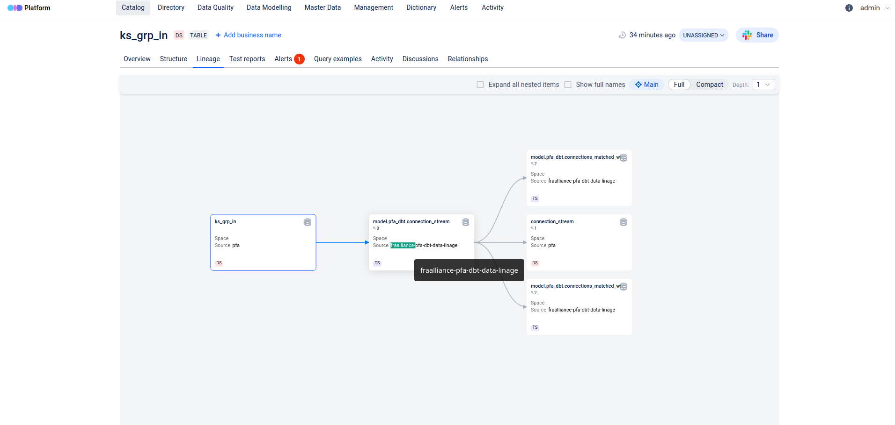
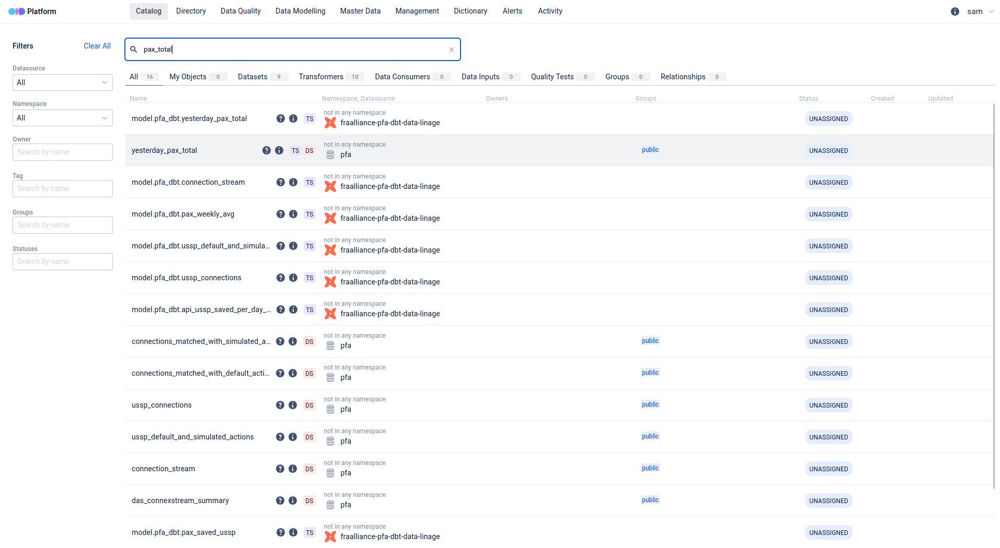
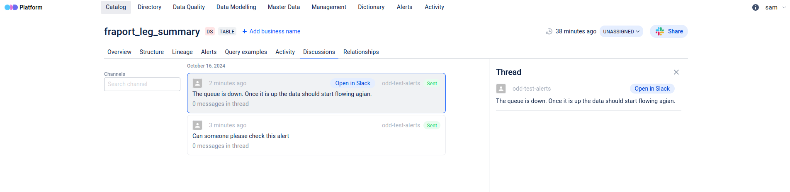

The Surprising Complexity of Fueling an Aircraft
A Machine Learning Approach
Samuel McGuire Datatactics
17-06-2025
Open Data Discovery
What can you do with ODD
- Centralize and Organize All Data Assets
- Ensure Data Quality and Consistency
- Improve Compliance and Data Governance
- Reduce Data Redundancy
- Enhance Collaboration
Centralize and Organize All Data Assets

Ensure Data Quality and Consistency

Improve Compliance and Data Governance

Reduce Data Redundancy

Enhance Collaboration

What works automatically now:
- Metadata is collected logged to ODD
- Tests are logged and alerts are sent if they fail
- The lineage of the data modelling is logged in ODD
What works manually now:
- Adding descriptions of the data entities
- Configuring new tests and collectors
- Adding owners, tags etc
Next Steps
- Set up with external URL
- Add to Fraalliance Platform login
- Add source company for every entity
- Add more data validation tests
- Add more entity types - e.g. Superset, MLFLow
Long term goals
- Automate some of the manual tasks
- LLM/API to create descriptions
- Enable Internal Data Marketplace/Subscriptions
- Automate stats and tagging via odd-profiler
- Your ideas?